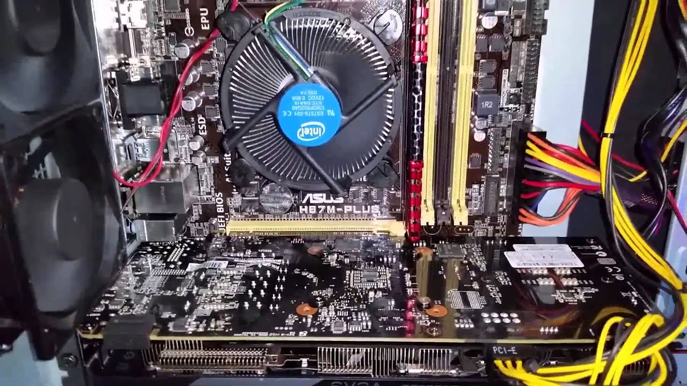
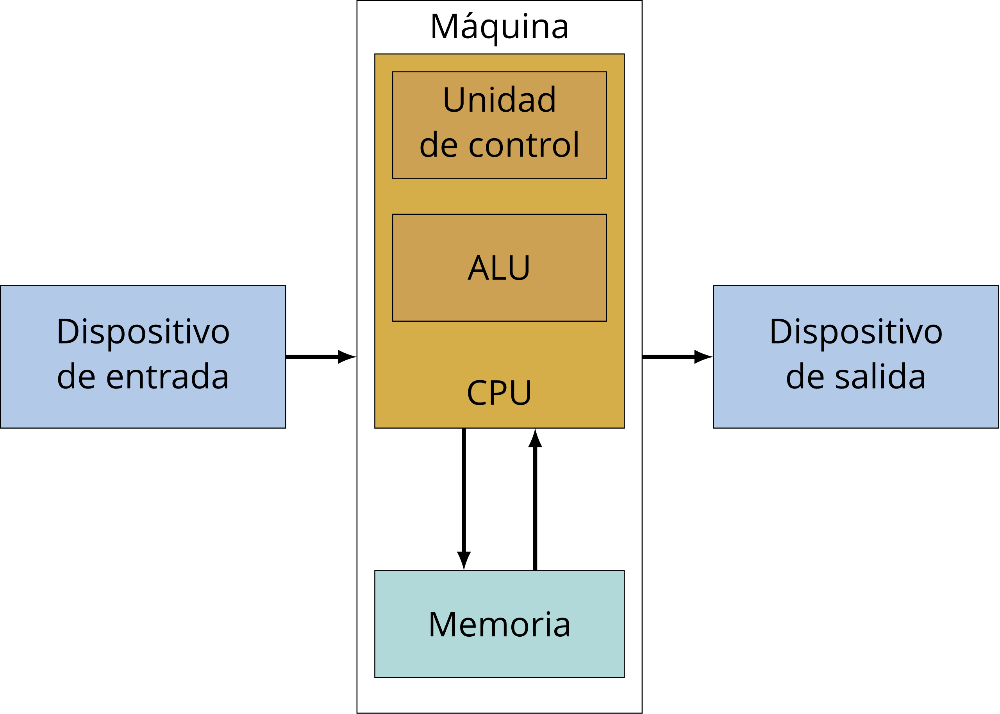

Los elementos esenciales del Hardware de una computadora son cuatro
1. La Unidad Aritmético Lógica (ALU) que es donde se llevan a cabo las operaciones elementales, como las aritméticas (suma, resta), lógicas (Y, O, NO), y operaciones de comparación o relacionales. En esta unidad es en donde se hace todo el trabajo computacional.
2. La Unidad de Control (UC), que es donde se gestionan las instrucciones y transmiten las informaciones entre las unidades pertinentes (se lleva el registro de la ubicación en la memoria de las instrucciones que el ordenador va a realizar, se transmite la información a la ALU para el procesamiento, etc).
La UC, Junto a la ALU forman la Unidad Central de Procesamiento (CPU por su sigla en inglés - Central Processing Unit).
3. La Memoria principal, también conocida como la RAM (Random Access Unit) es un conjunto de celdas de almacenamiento organizadas de tal forma que se pueden acceder numéricamente (dirección de memoria) de manera directa. Cada celda elemental corresponde a un bit. De esta forma, cuanta mayor memoria RAM tiene una computadora, tiene más capcadidad para guardar informaciones y por lo tanto, realizar operaciones más complejas de manera más rápida.
4. Los periféricos de Entrada y/o Salida; son los dispositivos que permiten el ingreso y/o egreso de datos e información. Por ejemplo, el teclado, el mouse y una cámara web son dispositivos de entrada; el monitor o los parlantes son dispositivos de salida; un disco rígido es un dispositivo de entrda y salida.
